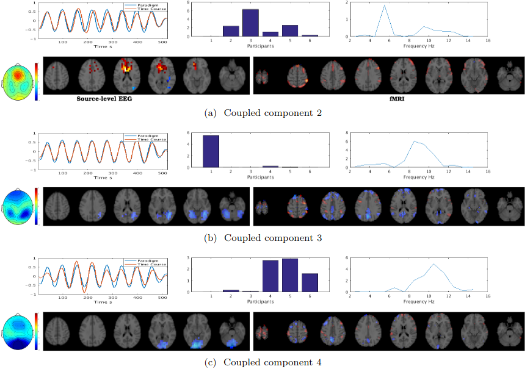

I am a research/R&D engineer with passion for computer vision, machine learning, functional neuroimaging,
and medical signal and imaging analysis.
An active learner with a hybrid commercial-academic background.
On the academic side, I have a bachelor's degree in electronics, a master degree in signal processing,
and a PhD in neuroimaging.
I have held two post doctorcal positions at the University of Auckland (2015-2017) in multimodal neuroimaging,
and Queendland University of Technology (2018-2021) in medical image analaysis.
I have more than 25 pear reviewed publications with 13 as the first author.
On the industry side, I gained commercial experiences at Broadcast Virtual and mPort Ltd as the
R&D research engineer with focus on 3D computer vision and machine learning.
Email: y.jonmo@gmail.com,
LinkedIn,
GitHub,
Google Scholar,
Location: Sydney, Australia
At Broadcast Virtual, we perform various forms of virtual advertisements. In the above example, using semantic segmentation the physical LEDs are removed from the footage. Then using camera tracking, the virtual advertisements are superimposed on the footage.
At mPort Ltd the 3D body scannibg app provides body avatars + anatomical measurements for people using the iPhones.
Minimally invasive surgery (MIS) has many documented advantages, but the surgeon’s limited visual contact with the scene can be problematic. Hence, systems that can help surgeons navigate, such as a method that can produce a 3D semantic map, can compensate for the limitation above. In theory, we can borrow 3D semantic mapping techniques developed for robotics, but this requires finding solutions to the following challenges in MIS: 1) semantic segmentation, 2) depth estimation, and 3) pose estimation. In this paper, we propose the first 3D semantic mapping system from knee arthroscopy that solves the three challenges above. Using out-of-distribution non-human datasets, where pose could be labeled, we jointly train depth+pose estimators using self-supervised and supervised losses. Using an in-distribution human knee dataset, we train a fully-supervised semantic segmentation system to label arthroscopic image pixels into femur, ACL, and meniscus. Taking testing images from human knees, we combine the results from these two systems to automatically create 3D semantic maps of the human knee. The result of this work opens the pathway to the generation of intra-operative 3D semantic mapping, registration with pre-operative data, and robotic-assisted arthroscopy. Source code: https://github.com/YJonmo/EndoMapNet.
Sample image sequence
Reconstructed 3D semantic map
The fusion of simultaneously recorded EEG and fMRI data is of great value to neuroscience research due to the complementary properties of the individual modalities. Traditionally, techniques such as PCA and ICA, which rely on strong strong nonphysiological assumptions such as orthogonality and statistical independence, have been used for this purpose. Recently, tensor decomposition techniques such as parallel factor analysis have gained more popularity in neuroimaging applications as they areable to inherently contain the multidimensionality of neuroimaging data and achieve uniqueness in decomposition without imposing strong assumptions. Previously, the coupled matrix-tensor decomposition (CMTD) has been applied for the fusion of the EEG and fMRI. Only recently the coupled tensor-tensor decomposition (CTTD) has been proposed. Here for the first time, we propose the use of CTTD of a 4th order EEG tensor (space, time, frequency, and participant) and 3rd order fMRI tensor (space, time, participant), coupled partially in time and participant domains, for the extraction of the task related features in both modalities. We used both the sensor-level and source-level EEG for the coupling. The phase shifted paradigm signals were incorporated as the temporal initializers of the CTTD to extract the task related features. The validation of the approach is demonstrated on simultaneous EEG-fMRI recordings from six participants performing an N-Back memory task. The EEG and fMRI tensors were coupled in 9 components out of which 7 components had a high correlation (more than 0.85) with the task. The result of the fusion recapitulates the well-known attention network as being positively, and the default mode network working negatively time-locked to the memory task.
The following block diagram illustrates the spatial, temporal, and spectral operations required to
create the 4th order EEG and 3rd order fMRI tensors. The EEG and fMRI tensors could be coupled in
temporal and participant domains. The paradigm signal could be used as a temporal constraint for the
coupled tensor-tensor decomposition..
